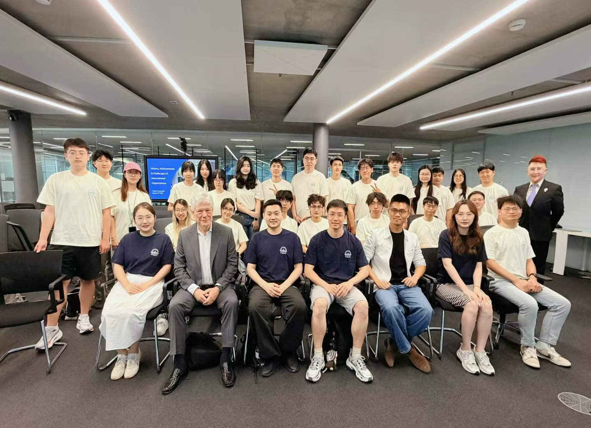
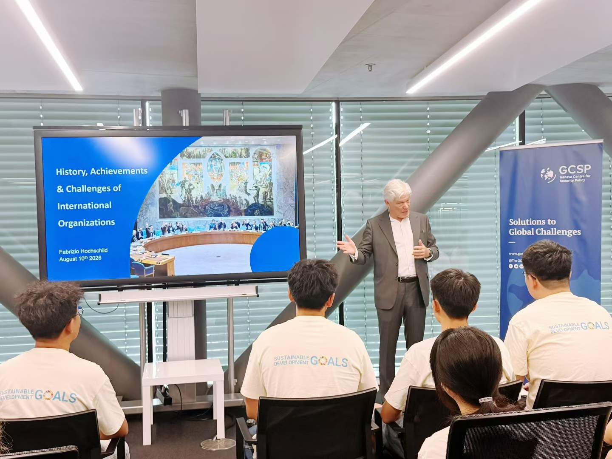
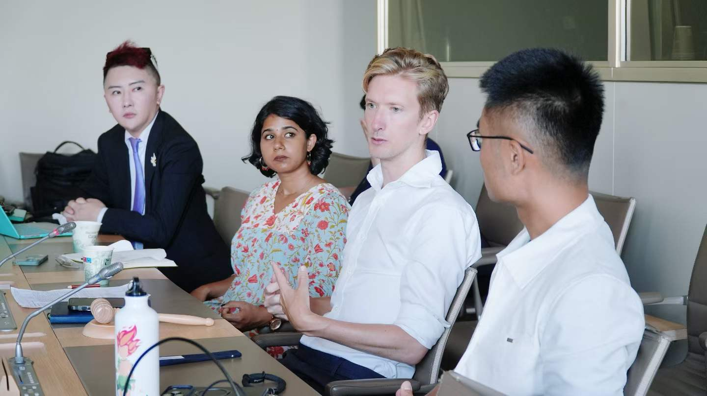
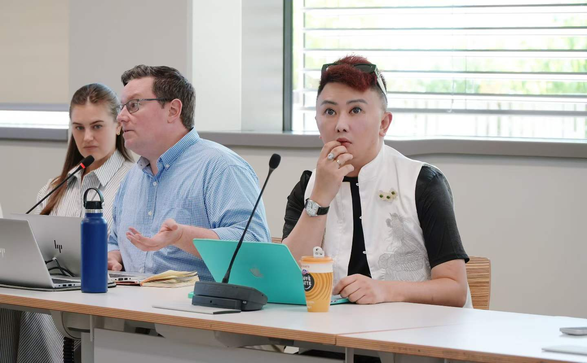
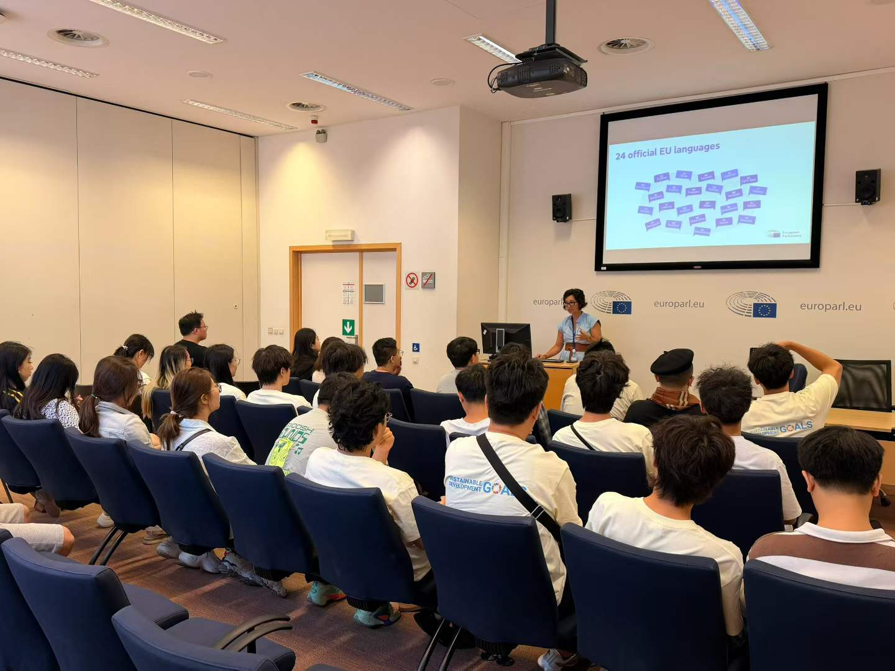
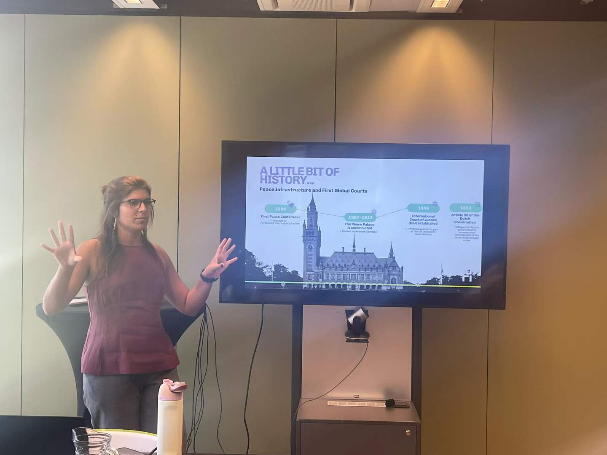
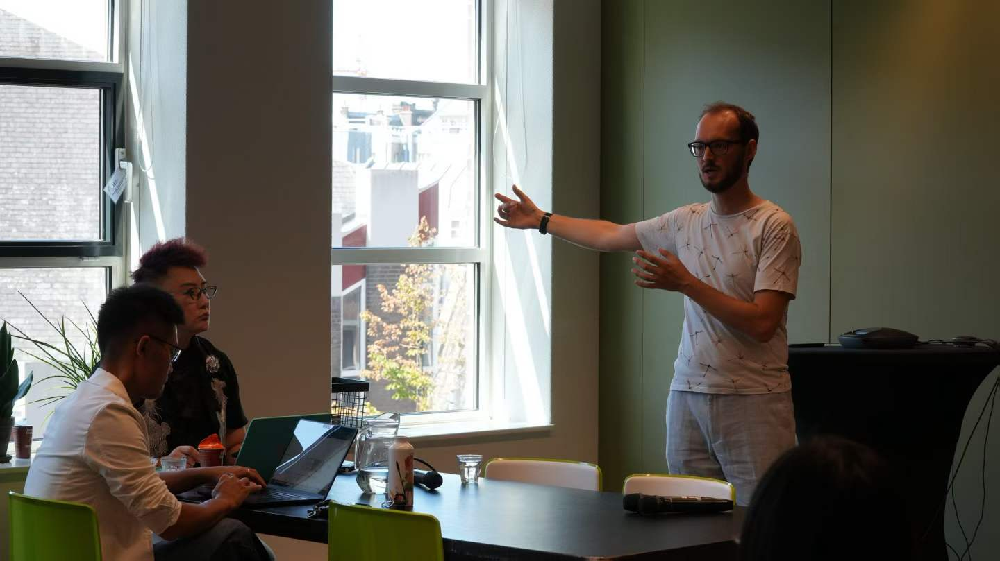

European Leadership Initiative Officially Launched: Youth from 40 Countries Step into the Frontlines of Multilateral Governance

Location
Geneva, Brussels, and The Hague
Date
August 2026
In August 2026, the European Leadership Initiative (ELI) was officially launched in Geneva, Switzerland, under a tripartite multilateral cooperation platform jointly driven by the World Trade Organization (WTO), the Global Youth Development Alliance (GYDA), and the Global Student Association (GSA). Delegations of young leaders representing forty countries traveled across Geneva, Brussels, and The Hague—three key hubs of global governance—for an immersive multilateral study mission. The delegations engaged directly with United Nations entities, multilateral trade negotiations, European legislative bodies, international judicial institutions, and frontier big-science infrastructures, facilitating a strategic transition for emerging researchers and policymakers from peripheral observation to substantive involvement in global rule-making.
Geneva: Hub of Multilateral Diplomacy and Global Health Governance
As a primary crossroads of global multilateral diplomacy, Geneva served as the foundational station of the initiative. Fabrizio Hochschild, Former Under-Secretary-General of the United Nations and Senior Advisor to GYDA, delivered a comprehensive keynote address to the youth representatives. Tracing the century-long evolution of international organizations from the Congress of Vienna to the contemporary United Nations governance framework, he provided an objective analysis of the achievements and structural constraints of multilateral mechanisms, encouraging young leaders to explore equitable and inclusive pathways for global development amid complex geopolitical transformations.

Timothy Adamson, Senior Officer for International Exchanges at the WTO, subsequently conducted a thematic session dissecting multilateral trade rules, global trade negotiation mechanisms, and the international dispute settlement system. He evaluated the core functions of the WTO in navigating globalization and deglobalization currents, emphasizing that every compromise negotiated at the trade table reflects a dynamic equilibrium among national interests, developmental imperatives, and the provision of global public goods.

In global public health governance, Stephen Murphy, Lead Official at the Global Fund to Fight AIDS, Tuberculosis and Malaria (Global Fund), presented the operational impact of multilateral health mechanisms to the delegates. To date, the collective mobilization across the Global Fund's international health network has saved more than 70 million lives. This milestone demonstrates that multilateral collaboration extends beyond conceptual consensus to deliver quantifiable, life-saving interventions that safeguard human well-being.

Brussels: The European Parliament and Supranational Democratic Legislation
In Brussels, Belgium—the administrative core of European integration—the ELI delegation conducted an on-site study mission at the European Parliament. Sarah Lahmer, Parliamentary Official, outlined the legislative architecture, decision-making procedures, and operational dynamics of the Parliament, elaborating on democratic practices and youth collaboration frameworks across the European Union (EU).

Observing the full legislative trajectory from bill proposal and debate to revision and final enactment, delegates examined the institutional mechanics of supranational decision-making. As a transnational legislative body directly elected by citizens across member states, the European Parliament demonstrated institutional mechanisms for aggregating, structuring, and expressing public will across national borders.
The Hague: International Justice and Frontier Big-Science Collaboration
In The Hague, Netherlands—the capital of international law—the delegation explored The Hague Humanity Hub, an innovation platform for peace and justice ecosystems. Marcela Neves, Head of The Hague Humanity Hub, presented the collaborative network connecting international policymakers, research institutions, and practitioners, illustrating the platform's role in facilitating cross-border policy dialogue and multilateral innovation incubation.

In transnational science and technology governance, Jacco-Pepijn Baljet, Policy Officer for the National Einstein Telescope Programme at the Dutch Ministry of Education, Culture and Science and former Senior Policy Officer in the Cyber Taskforce at the Dutch Ministry of Foreign Affairs, presented international governance frameworks for major scientific infrastructures. He detailed the integration of the Einstein Telescope (ET) into the national roadmap for large-scale research infrastructure: supported by a direct national commitment of 870 million euros alongside a combined cross-border regional budget of approximately 15.7 billion euros across Belgium, Germany, and the Netherlands, the project established a three-tier transnational collaborative governance model. Leveraging massive scientific infrastructure to drive advanced manufacturing, regional economic growth, and cross-border research talent development, this initiative demonstrates the strategic value of multilateral coordination in big-science and frontier technological governance.

Multilateralism Through the Lens of Youth and Institutional Horizons
Spanning the United Nations system and global health frameworks in Geneva, the European governance apparatus in Brussels, and the international legal and technological hubs in The Hague, the European Leadership Initiative established a comprehensive blueprint of global multilateral governance for the rising generation. The initiative's engaged institutional network encompassed core United Nations bodies including the WTO, the World Health Organization (WHO), the International Court of Justice (ICJ), the International Criminal Court (ICC), the Organisation for the Prohibition of Chemical Weapons (OPCW), the Permanent Court of Arbitration (PCA), and the United Nations Educational, Scientific and Cultural Organization (UNESCO), alongside major European and international governance institutions such as the European Parliament, the European Commission, and the Organisation for Economic Co-operation and Development (OECD).
The successful implementation of the European Leadership Initiative marks a strategic transition toward institutionalized pathways for youth participation in global governance, driven by tripartite cooperation among international organizations, youth development alliances, and student bodies. Moving forward, GYDA will continue to leverage its multilateral networks to advance youth participation, voice, and leadership, channeling emerging scientific and policy capabilities into the global multilateral system.